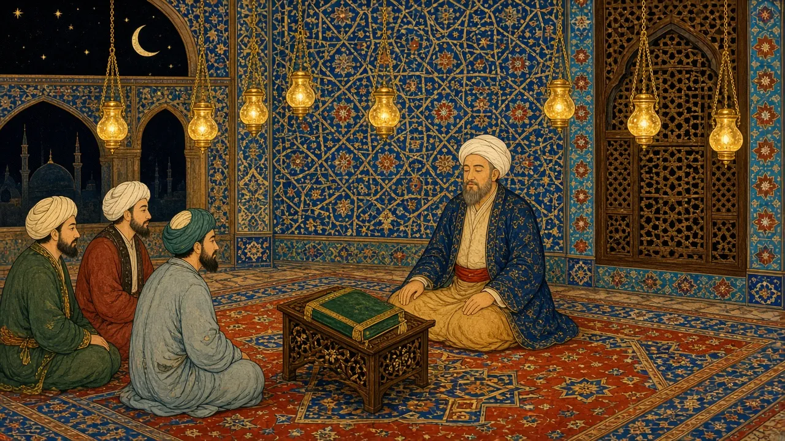
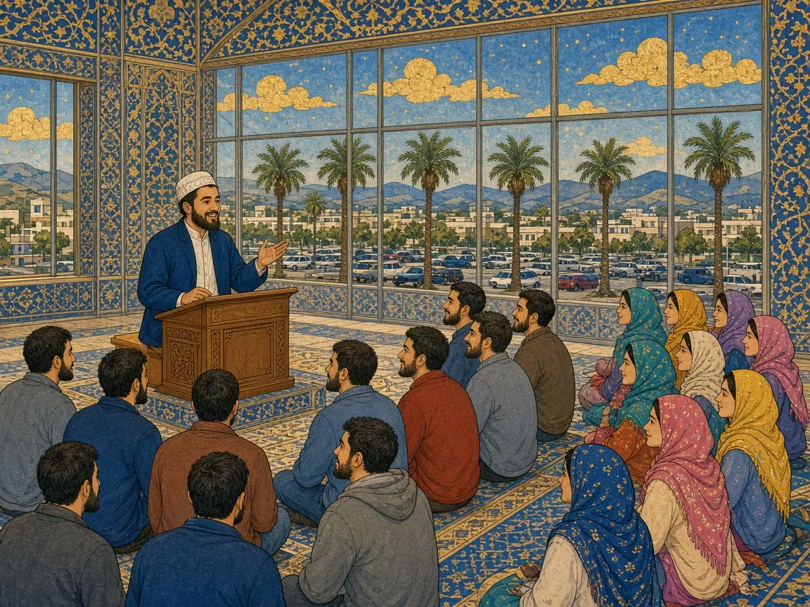
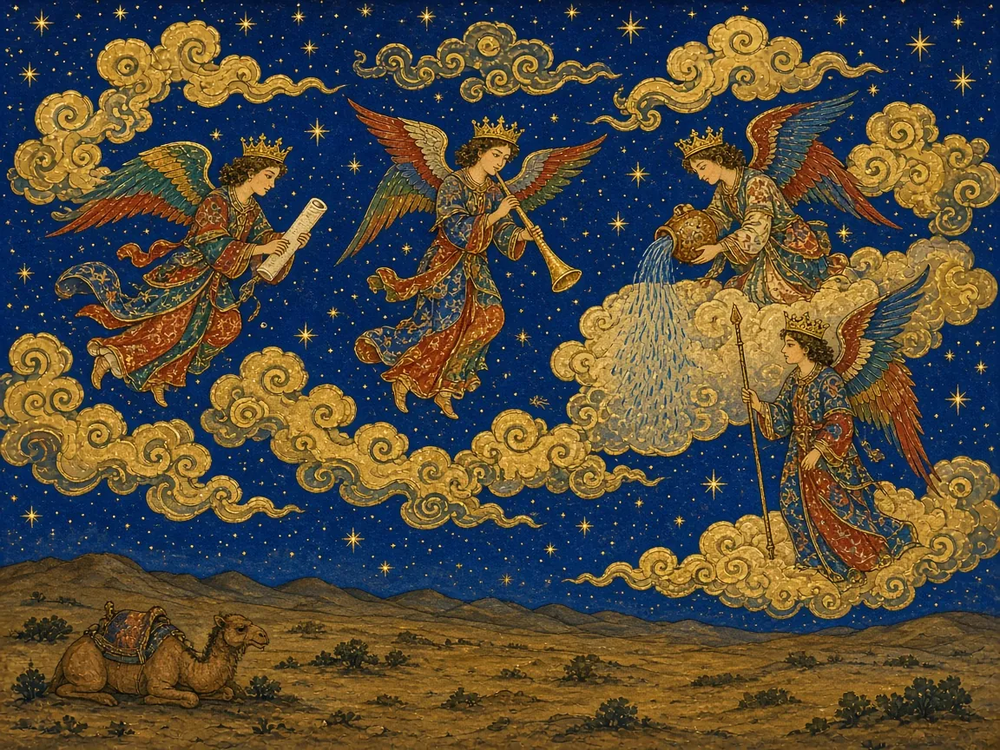
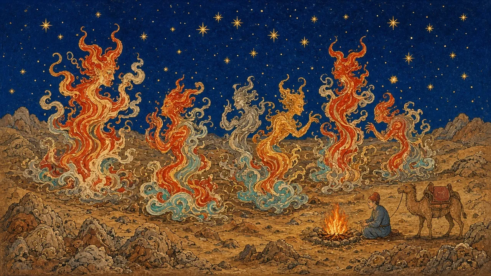
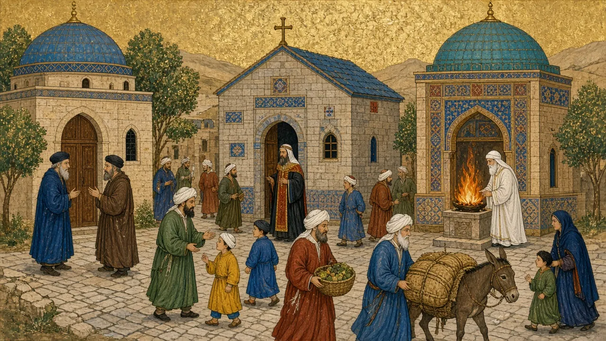
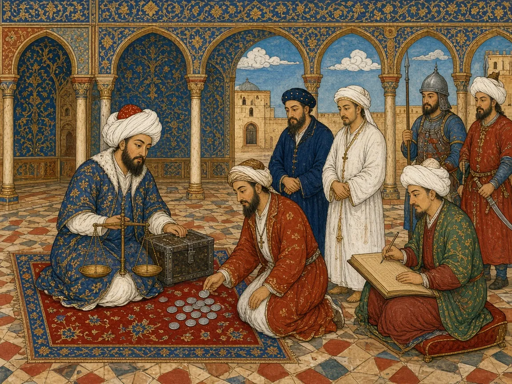
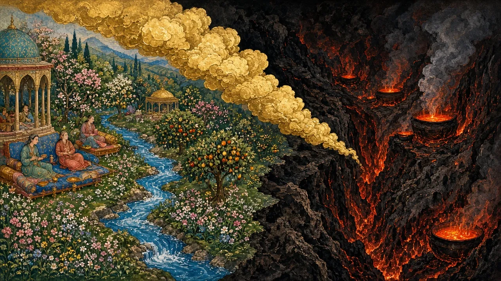

Background essay for Lecture 3 · PHIL 210 World Religions · Chapter 12: Islam · Steven Austin
This essay is the full written version of Lecture 3. It follows the lecture from beginning to end and includes the required independent study, placed where each topic belongs, so that the whole lecture can be read as one continuous account. Page numbers in parentheses refer to Robert E. Van Voorst, RELG: World, 4th edition, Chapter 12. Material from outside the textbook is marked as such, and the notes at the end give its sources. Where the textbook reports what Muslims believe, the essay says so.

Lectures 1 and 2 told the story of Islam. Lecture 3 turns to its core beliefs, which the chapter calls the “essential Islamic teachings” (pp. 306–311). You will learn three review questions here: what Muslims teach about God (Review Question 11), the main features of the Qur’an (Review Question 5), and how Muslim rulers traditionally treated the “People of the Book” (Review Question 6).
The order of the lecture follows the logic of Islamic belief. It begins with God, who is one and only one; then the beings God created, angels and jinn; then the way God speaks to humanity, through the Qur’an, a recitation in Arabic; then the long line of prophets who brought God’s word before Muhammad, and the communities that hold their books; and finally the Day of Judgment, when every person’s deeds are weighed.
Notice the painting above, the title image of the lecture. A reciter sits in a lamplit mosque, and the book in front of him is closed and wrapped in cloth. He is reciting from memory. That is a clue to the most important idea about the Qur’an: it is first of all something heard and spoken, not just read.1
1. “My Main Objective Is to Make Islam Relevant”

The chapter opens its teachings section in a mosque in Orange County, California (p. 306). The imam, Yassir Fazaga, keeps an eye on the American calendar so his weekly Friday sermon connects with his listeners’ lives. Around Valentine’s Day, for example, he talks about how the Qur’an endorses romantic love within certain moral boundaries. “My main objective is to make Islam relevant,” he says.
Fazaga himself is a picture of North American Islam: born in East Africa, a high school student in Orange County, then college and religious training in Virginia. The chapter notes that as the first generation of American Muslims graduates from American colleges in significant numbers, some mosques are looking for leaders who can teach not only the main teachings of Islam but also issues relevant to young Muslims here, such as dating, marriage, and drugs. One of the challenges facing Islam in North America is finding imams who can lead in that context (p. 306).
Keep Fazaga in mind as you study the beliefs in this lecture. They are ancient, but they are also the beliefs of your classmates and neighbors, applied every week to modern questions.2
2. Allah Means “God”
Muslims consider the teaching that there is only one God to be the basis and the center of their religion (p. 306). Start with the word. Allah does not refer only to the God of Islam. It is the common, generic Arabic word for God, and when Muslims talk in Arabic about the God of Jews, Christians, and Zoroastrians, Allah is the word they use. So “Allah” is not the name of a different god; it is how Arabic says “God.”
What is God like? Here is the first anchor sentence for Review Question 11: “God is an eternal, spiritual being; God is not a force, but a divine person” (p. 306). Notice the contrast with some other religions you have studied this semester, where ultimate reality is an impersonal force or principle. In Islam, God knows, wills, speaks, commands, and judges.
Islam’s monotheism is strict and absolute: God is one and one only. The chapter says the Qur’an sees Islam as carrying on the true monotheistic religion that Judaism and Christianity have mostly abandoned (p. 306). Muslims therefore reject polytheism as false religion. The next section shows the most important consequence of that strictness.
Review Question 11 (p. 306): What are the main features of the Islamic teaching about God? Anchor sentences, word for word: “God is an eternal, spiritual being; God is not a force, but a divine person.” and “In Islam, idolatry (shirk), acknowledging other gods besides the one and only God, is considered the worst sin.”3
3. “He Begot No One”
These three short lines from Qur’an chapter 112 are among the most recited words in Islam. The chapter quotes them: “God is One, the eternal God. He begot no one, nor was He begotten” (112:1–3, p. 306). Tradition holds that this short chapter is worth a third of the Qur’an, because it sums up the doctrine of God.
Why the emphasis on begetting? Think back to Mecca. Pre-Islamic Arabs spoke of the three “daughters of Allah.” The chapter says Muhammad considered the “fatherhood” of Allah, which he associated with sexual procreation of a son or of the daughters of Allah, to be idolatrous (p. 306). God does not have children, divine or human.
That conviction put Islam at odds with Christianity. The chapter says Muslim monotheism “led to opposing the Christian doctrine of Jesus as the Son of God” (p. 306). Muslims honor Jesus highly, as you will see in the section on the prophets, but as a prophet, not as God’s son. This is the deepest theological difference between the two faiths, and it rests on these three lines.4
4. Shirk: The Worst Sin
Here is the second anchor sentence for Review Question 11: “In Islam, idolatry (shirk), acknowledging other gods besides the one and only God, is considered the worst sin” (p. 306). Shirk (SHIRK) literally means “association”: associating anything or anyone with God as God’s partner.
Why is it the worst sin? Because if the most basic truth is that God is one, then the most basic error is to deny it, to give to something created the honor that belongs only to the Creator. Remember Lecture 1: Muhammad’s first great act on returning to Mecca was to remove the idols from the shrine.
Because shirk is so serious, Muslims guard against anything that might lead to it. The chapter says Muslims forbid idolatry so strongly that they forbid anything that may encourage it or make it possible. Therefore, they do not make images or pictures of God, and if Muhammad is depicted at all, his face is omitted (p. 306). That is why the lectures never picture the Prophet. Wahhabis, in Lecture 5, go further and condemn the veneration of saints’ tombs as idolatry.
Review Question 11 (p. 306): What are the main features of the Islamic teaching about God? Anchor sentences, word for word: “God is an eternal, spiritual being; God is not a force, but a divine person.” and “In Islam, idolatry (shirk), acknowledging other gods besides the one and only God, is considered the worst sin.”5
5. Beauty Without Images

Here is one of the most visible results of the ban on idolatry. Strict Muslims today, the chapter says, object to any representational art forms as a temptation to idolatry (a few schools of Muslim art in the past ignored this). That has led to mosques being decorated only with colorful geometric patterns, which are said to reflect the order and beauty of creation as a whole, not of God (p. 307).
Look at the tiles above, from the Alhambra, the palace of the last Muslim rulers of Spain. Stars, polygons, and interlacing bands repeat without end. Many viewers find that the endless pattern suggests the infinite without picturing anything. The chapter’s author describes his first visit to the Dome of the Rock in Jerusalem, the third holiest site in Islam, as entering “one of the most beautiful buildings he had ever seen” (p. 307). Verses from the Qur’an are also used to decorate mosques and homes, which made calligraphy the highest Islamic art.
Notice the logic: art is not forbidden; idolatry is. Geometry, plants, and beautiful writing are ways to honor God without risking the worst sin. The key terms below cover how this applies to pictures of the Prophet.6
6. Ninety-Nine Names and “If God Wills”
The chapter finishes its portrait of God on p. 307, and these features belong in your answer to Review Question 11.
God is unique in essence and attributes, infinite, and the creator and sustainer of all that exists. The Qur’an says, “His are the beautiful names,” ninety-nine in all. The names are scattered throughout the Qur’an but were compiled in a later tradition. Many Muslims use prayer beads in sets of thirty-three or ninety-nine to recite them. Every chapter of the Qur’an but one opens with two of them: “the Most Gracious, the Most Merciful.”
Yet God is beyond all human thought and understanding. The chapter puts it precisely: God “can be described, but not known in any comprehensive way” (p. 307). God is also all-powerful, and Muslims typically believe that all that happens in the world, good or evil, happens within the plan and control of God.
You can hear that belief in everyday speech. Muslims say inshallah (the textbook spells it enshallah), “if God wills it,” whenever they talk about the future; it is probably the most commonly used Arabic expression (p. 307). “See you tomorrow, inshallah.” It is a small daily act of submission.7
Chapter 12 Review Question 11
What are the main features of the Islamic teaching about God?
Stop and draft your answer to Review Question 11. It is the last question on the list, but it is taught here because it belongs with the teachings about God.
A strong answer covers several features. First, the word: what Allah means and who uses it. Second, the nature of God from the first anchor sentence: eternal, spiritual, a divine person rather than a force. Third, God’s strict oneness, with Qur’an 112 as evidence and its consequence for Christian belief about Jesus. Fourth, the worst sin, shirk, from the second anchor sentence, and the rules that follow from it about images.
Then add the features from the last two sections: why mosques are decorated without images, God’s ninety-nine “beautiful names,” the idea that God is beyond full human understanding, and God’s all-powerful control, expressed in the phrase “if God wills it” (p. 307).
Both anchor sentences are on p. 306.8
7. Gabriel and the Angels

After God come the beings God created. The chapter says God created angels and spirits to serve God and the human beings created later (p. 307). Belief in angels is one of the basic articles of Muslim faith.
The most important angel is Gabriel. Muhammad received the Qur’an through the archangel Gabriel, whom you met in the cave on Mount Hira in Lecture 1. Islam recognizes three other archangels and a large company of ordinary angels. As in Judaism and Christianity, angels are the messengers carrying divine revelation to humans (p. 307). Outside the textbook, Muslim tradition names the other archangels as Michael, Israfil, who will blow the trumpet on the Last Day, and Azrael, the angel of death, and teaches that two recording angels write down each person’s deeds.
The painting follows the Persian miniature tradition, which pictured angels with wings, crowns, and rich robes. This is one area where Muslim art did show figures, though never God.
Notice the overlap with the Bible. Gabriel appears in the Gospel of Luke announcing the birth of Jesus, and in the Qur’an he plays a similar role for Mary (Qur’an 19). Muslims see this not as borrowing but as the same God speaking through the same messengers.9
8. The Jinn

Besides angels, the chapter says, there are many spirits called jinn (JIHN), related to our word “genie.” You met them in Lecture 1 as the spirits of the pre-Islamic desert. Islam did not deny them; it placed them under God. In the Qur’an they say about themselves, “Some of us are Muslims and some are wrongdoers” (72:14, p. 307). Like humans, then, jinn can choose to submit to God or not.
Evil jinn are led by the devil, a spirit who rebelled against God when humans were created. Muslims must be on guard against the jinn, because they can cause not only physical but also spiritual harm by luring believers away from God. The chapter corrects a common Western mistake: jinn are not spirits of deceased humans, but nonhuman spirits who have fallen into evil and often tempt humans to do wrong (p. 307).
Many Muslim believers, the chapter says, have a lively sense of the good and evil forces of the jinn; the key terms below give a striking example. The next section, on folk Islam, explores how some Muslims focus on the spirits more than on God, and how teachers have responded.10
9. Folk Islam and the Spirits
Every religion you study this semester has two levels: what its official teachers say and what ordinary believers do. This section looks at that gap in Islam, using the jinn as the example.
The chapter says that although the Qur’an and official Muslim teachings focus on belief and practices that draw the believer’s focus to God alone, “some Muslims practice Islam primarily to keep evil spirits at bay and bring the blessing of good spirits” (p. 308). Scholars often call this folk Islam or popular Islam. Outside the textbook, it can include wearing amulets with Qur’an verses, using charms against the evil eye, seeking healing from holy men, and visiting the tombs of saints to ask for blessing. Sufism, which you will meet in Lecture 5, spread especially among the lower classes and in folk Islam in Africa and Central Asia (p. 302).
Remember the Riyadh hospital raid of 2012: hundreds of teenagers trying to drive out jinn shows how real the spirit world is for many believers (pp. 307–308).
How do Muslim teachers respond? The chapter says many Islamic teachers today are laboring, as Sufis did in the past, to raise all Muslims to a fuller understanding of monotheism: “an understanding that the focus of one’s faith should not be on spirits, but on the God who controls good and evil spirits” (p. 308). Reformers such as the Wahhabis go further and condemn many folk practices, especially saint veneration, as shirk (p. 303).
Connect it: this is the same tension you saw in the section on shirk. The more seriously a tradition takes the oneness of God, the more it worries about anything, even a good spirit, that draws attention away from God. Compare folk practices you have studied in other chapters, such as spirit beliefs in Chinese religion.11
10. The Recitation

Now the book itself. Here is the first anchor sentence for Review Question 5: “Muslims believe that the angel Gabriel divinely revealed to Muhammad the Qur’an, the perfect copy of an eternal, heavenly book” (p. 308). Notice two big claims. The Qur’an is not Muhammad’s writing, or even his inspired thoughts; it is God’s own speech, delivered word for word. And the earthly Qur’an is a perfect copy of a book that exists eternally with God.
The name tells you how it works. Qur’an means “recitation,” which reflects the main origin and use of this scripture: oral communication, first from Gabriel to Muhammad, and then from Muhammad to his followers (p. 308). Remember the angel’s first command in Lecture 1: “Recite!” The Qur’an was heard before it was read, and it still is: Muslims meet it most often in prayer and in recitation.
Because it is God’s word, Muslims treat even mass-produced copies with great respect; many wash before touching one and never place it on the floor. The photograph above shows the opening pages of a Qur’an copied in 1503–1504 by Sheikh Hamdullah, the most famous Ottoman calligrapher.
Review Question 5 (p. 308): What are the main features of the Qur’an? Anchor sentences, word for word: “Muslims believe that the angel Gabriel divinely revealed to Muhammad the Qur’an, the perfect copy of an eternal, heavenly book.” and “The Qur’an itself is said to exist only in Arabic, the language in which it was revealed by Muhammad to others.”12
11. How the Qur’an Was Compiled

Lecture 2 told this story briefly as part of Uthman’s reign. Here it is again, with what scholars have learned since.
The chapter says Muhammad himself had not committed any of the revelations to writing, much less overseen that process. His followers recorded his recitations on parchment, palm leaves, and even pieces of wood. Uthman gathered these, along with the collections that already existed, kept what he knew to be authentic, and destroyed the rest. “The Qur’an emerged as we have it today, and Muslims believe that it perfectly reflects Gabriel’s revelations to Muhammad” (p. 298).
Muslim tradition, outside the textbook, adds detail. After many of those who had memorized the Qur’an were killed in battles soon after Muhammad’s death, Abu Bakr had Zayd ibn Thabit, one of Muhammad’s scribes, gather the written pieces into a single collection. Under Uthman, about 650, a committee led by Zayd produced the standard text, copies were sent to the main cities of the empire, and variant copies were burned. That is the scene imagined in Lecture 2’s painting.
What have manuscript scholars found? The pages shown above, the Birmingham Qur’an, were radiocarbon-dated in 2015 to between about 568 and 645. The Sana’a manuscript, found in Yemen in 1972, contains an older text that was scraped off and written over; its lower text shows small variations in wording and order. Most scholars conclude that the Qur’an’s text was fixed very early, within a generation of Muhammad, which broadly fits the traditional account, while they continue to debate the details.
Connect it: compare how the New Testament and the Hebrew Bible came together over centuries. The Qur’an’s quick standardization is unusual among world scriptures.13
12. 114 Surahs, Longest to Shortest
How is the Qur’an organized? It is divided into 114 chapters called surahs (SOO-ruhs), and each chapter is divided into verses (p. 308). When you see a reference like 112:1–3, the first number is the surah and the second is the verse.
Its size surprises many students. Because Muslims see the Qur’an as the successor and fulfillment of the Jewish and Christian scriptures, the chapter says it is fair to compare: the Qur’an is about two-thirds the size of the New Testament and half the size of the Jewish Bible (p. 308).
The arrangement is the biggest surprise of all. The chapters are arranged by length, from longer to shorter, not by the order in which they were revealed. Since the earliest revelations were short and the later ones long, the Qur’an runs roughly backward in time. The shorter, older chapters focus on the basic themes of one God and future judgment, the two themes of Muhammad’s Meccan preaching. The longer, later ones contain detailed instructions for the Islamic community, from Medina, along with references to biblical history (p. 308).
Unlike the Jewish and Christian Bibles, the Qur’an gives virtually no historical narratives; it is almost all teaching and commands. One exception to the length rule opens the book, as the next section shows.14
13. al-Fatihah, “The Opening”

In the name of God, the Most Gracious, the Most Merciful. All praise and thanks be to God, the Lord of the Worlds, the Most Gracious, the Most Merciful, the only Lord of the Day of Judgment. You alone we worship, and You alone we ask for help. Guide us on the Straight Way, the Way of those on whom you have bestowed your grace, not of those who incur your anger or those who have gone astray.
Qur’an 1, quoted on p. 308
The Qur’an begins with al-Fatihah (al-fah-TEE-huh), “the Opening,” chapter 1, which the chapter calls “a beautifully resonant prayer that is recited at prayer times” and says “comes close to providing a summary of Islam” (p. 308). Read it slowly, out loud if you can.
Look for the themes you have already learned. God’s names: “the Most Gracious, the Most Merciful.” God as Lord of all the worlds, not just of one people. Judgment: God is “the only Lord of the Day of Judgment.” Strict monotheism and submission: “You alone we worship, and You alone we ask for help.” And the request at the heart of it: “Guide us on the Straight Way.” The chapter’s title for Islam is “the straight path of the one God,” and Lecture 5 is called “The Straight Path Today.”
Al-Fatihah is recited in Arabic in every unit of the daily prayers, so an observant Muslim says it at least seventeen times a day (Lecture 4). It is to Muslims what the Lord’s Prayer is to Christians, and many non-Arab Muslims know it by heart in Arabic before they know any other Arabic.15
14. Only in Arabic
The second anchor sentence for Review Question 5 reads: “The Qur’an itself is said to exist only in Arabic, the language in which it was revealed by Muhammad to others” (p. 308).
Why only Arabic? Because Muslims believe God chose the words, not just the ideas. Muslims believe that all translations of the Qur’an involve some distortion of meaning, so no translation can be the authentic, perfect Qur’an (p. 308). An English version is better called an interpretation of the meanings of the Qur’an. That is why the prayers are said in Arabic everywhere, from Indonesia to Michigan, and why non-Arab Muslim children learn to read and recite Arabic even when they do not speak it.
Practice has adjusted over time. The chapter cites a recent book by M. Brett Wilson, Translating the Qur’an in an Age of Nationalism, which shows how Muslims came to accept the long-rejected idea that the Qur’an should be translated into other languages. Where translations are used, many printed Qur’ans have the original Arabic on facing pages (p. 308). The next section, on translation, tells that story.
Review Question 5 (p. 308): What are the main features of the Qur’an? Anchor sentences, word for word: “Muslims believe that the angel Gabriel divinely revealed to Muhammad the Qur’an, the perfect copy of an eternal, heavenly book.” and “The Qur’an itself is said to exist only in Arabic, the language in which it was revealed by Muhammad to others.”16
15. Translating the Untranslatable
The chapter states the principle plainly: “Muslims believe that all translations of the Qur’an involve some distortion of meaning, so no translation can be the authentic, perfect Qur’an” (p. 308). Yet most Muslims today do not speak Arabic, and translations of the Qur’an exist in almost every major language. How did Muslims get from the principle to the practice?
The chapter points to M. Brett Wilson’s book Translating the Qur’an in an Age of Nationalism, which shows how Muslims came to accept “the long-rejected idea that the Qur’an should be translated into other languages” (p. 308). Wilson’s case study is Turkey (outside the textbook). In the late Ottoman Empire and early Turkish Republic, printing presses made cheap translations possible, Christian missionaries were distributing their own versions, and Turkish nationalists wanted a Qur’an that ordinary Turks could understand. Atatürk’s government even required the call to prayer in Turkish for a time, which you met in Lecture 2. Religious scholars resisted, then gradually accepted translations as aids to understanding, never as replacements for the Arabic.
The solution most Muslims accept today is visible in many printed editions. Where translations are used, the chapter says, many printed Qur’ans have the original Arabic text on facing pages (p. 308). Many translators title their work an interpretation of “the meaning” of the Qur’an. The English Muslim Marmaduke Pickthall did this in 1930 in The Meaning of the Glorious Koran, one of the first English translations by a Muslim.
For worship nothing changed: the daily prayers are still said in Arabic everywhere. Connect it: compare Christianity, which translated its scriptures from the start and fought its own battles over vernacular Bibles in the Reformation. Translation decisions always reveal what a tradition thinks scripture is.17
16. Memorize It All
If the Qur’an is above all a recitation, then knowing it means having it by heart. The chapter says Muslim schoolchildren memorize large sections of the Qur’an in Arabic, even if Arabic is not their main language, and imams are required to memorize all of it (pp. 308–309). A person who has memorized the whole Qur’an is honored with the title hafiz, “guardian.” The chapter’s photo of three boys in West Africa learning on traditional wooden tablets shows how this is often taught.
Recitation is also an art form, with fame and sometimes riches going to those who are talented. Many Muslim nations televise contests of Qur’anic recitation, and the chapter says the excitement approaches that for shows like America’s Got Talent in the United States (p. 309). Reciters are judged on accuracy, on following detailed rules of pronunciation and rhythm, and on beauty of voice.
Look back at the painting at the head of this essay: the book is closed. This connects to Lecture 1’s debate about Muhammad’s monotheism and to the earlier section on how the Qur’an was compiled. A text that lives in thousands of memories is hard to change.18
Chapter 12 Review Question 5
What are the main features of the Qur’an?
Write your answer to Review Question 5 now. This question asks for “main features,” so a list-like paragraph that covers many features is better than a long discussion of one.
Organize your answer around five features. Origin: what Muslims believe about how it was revealed and what it is a copy of, from the first anchor sentence. Name: what the word means and why. Language: the second anchor sentence, plus why Muslims treat translations as distortions and print the Arabic on facing pages. Structure: the number of chapters and their name, the verse divisions, the size compared with the Bible, and the ordering by length with what that means for older and later chapters. Use: al-Fatihah as the opening prayer and the memorization by children and imams.
If you want to go further, add one sentence from Lecture 2 about Uthman gathering the written fragments and issuing an authoritative edition, so that “the Qur’an emerged as we have it today” (p. 298).
Both anchor sentences are on p. 308. Check your answer against them.19
17. The Prophets

The Qur’an states that God has revealed the divine will at key points in human history through prophets. All the prophets, including Muhammad, call for the same response: submission to the will of God and preparation for an impending judgment (p. 309). Most of the twenty-five prophets mentioned in the Qur’an are well-known figures in Judaism and Christianity, such as Adam and Eve, Noah, Abraham, Moses, Jesus, and Mary. The Qur’an also names three Arabian prophets, Hud, Shu’aib, and Salih.
Here is the key idea. Jews and Christians claim these prophets as their own, but Muslims view them as Islamic prophets who taught submission to God; they did not come to found Judaism or Christianity as different religions. Muhammad is the culmination and conclusion of the entire line (p. 309). Tradition calls him the “seal of the prophets.”
Why do the Qur’an’s versions of biblical stories differ from the Bible’s? Muslims believe Gabriel gave these accounts directly to Muhammad, so the differences reflect God’s corrections. Non-Muslim scholars typically hold that Muhammad first heard the stories from Jewish and Christian contacts (p. 309), the same two views you met in Lecture 1. The painting is a real Persian manuscript illustration of Noah’s ark from about 1425.20
18. People of the Book

Some of the prophets in Islam’s line gave books to their people, the chapter says: Zarathustra wrote down his message for Zoroastrians; Moses recorded the law and David composed the Psalms for the Jews; Jesus taught the Gospels to Christians. Muslims call these groups People of the Book (p. 309).
Be precise about the term. It does not refer, as is sometimes said, to all people who have sacred books; many religions have sacred books. It refers only to people whose sacred books Muslims view as standing in a line of religious development with the Book, the Qur’an (p. 310). Hindus and Buddhists, for example, were not traditionally counted, although Muslim rulers in India later extended similar protections to them.
Notice how close the relationship is. The chapter says some passages in the Qur’an even suggest that People of the Book who follow their religions carefully will enter heaven along with Muslims (p. 310). It points readers to Jerusha Tanner Lamptey’s book on religious pluralism, which the section “Saved Along with Muslims?” discusses. The painting imagines a street in a medieval Muslim city where synagogue, church, and fire temple stand side by side. The next section shows the rules that governed that street.21
19. Protected, Taxed, Restricted

Here are the anchor sentences for Review Question 6: “After Muslim forces conquered Christian and Zoroastrian nations (their People-of-the-Book status didn’t protect these nations from attack), they weren’t forced to choose between conversion to Islam and death, as people of other religions usually were.” And: “They had to pay an extra tax and were subject to greater government oversight, but they were allowed to practice their religions among themselves” (p. 310).
The chapter is frank about the limits. Rebellion could bring annihilation, and they had no right to seek or even accept converts from Islam, to build new houses of worship, or sometimes even to repair old ones. “They didn’t have what North Americans would call freedom of religion” (p. 310).
Over time, most of these communities shrank to shadows of their earlier sizes (p. 310).
Review Question 6 (p. 310): How did Muslim rulers traditionally treat the groups known as the “People of the Book”? Anchor sentences, word for word (the first contains a parenthetical aside, set off here with parentheses): “After Muslim forces conquered Christian and Zoroastrian nations (their People-of-the-Book status didn’t protect these nations from attack), they weren’t forced to choose between conversion to Islam and death, as people of other religions usually were.” and “They had to pay an extra tax and were subject to greater government oversight, but they were allowed to practice their religions among themselves.”22
20. Saved Along with Muslims?
This section takes up a question the chapter raises in one sentence: “Some passages in the Qur’an even suggest that People of the Book who follow their religions carefully will enter heaven along with Muslims” (p. 310). The chapter also says, in its section on judgment, that for “unbelievers, including those of other religions who know of God but haven’t submitted to God, there is no forgiveness” (p. 310). How can both be true?
The Qur’an itself contains passages pointing in both directions (outside the textbook). Qur’an 2:62 and 5:69 say that those who believe, Jews, Christians, and Sabians, whoever believes in God and the Last Day and does good, will have their reward with their Lord and need not fear. Qur’an 3:85 says that whoever seeks a religion other than islam will not have it accepted. Much depends on how the word islam is read: as the name of the religion founded through Muhammad, or as the attitude of submission to God that the Qur’an finds in Abraham, Moses, and Jesus. Muslim scholars have argued over these passages for centuries; many classical scholars held that the inclusive verses applied only before Muhammad’s coming.
The chapter points to a contemporary contribution: Jerusha Tanner Lamptey’s Never Wholly Other: A Muslima Theology of Religious Pluralism (2014). Lamptey, a Muslim theologian, argues that the Qur’an recognizes real differences among religious communities as part of God’s plan, while still distinguishing between those who are conscious of God and those who are not. Her word “Muslima” signals that she writes as a Muslim woman.
Connect it: this is the same question Christians ask about salvation outside the church, which you may have met in Chapter 11. In both religions, careful readers find exclusive and inclusive texts and must decide how to weigh them.23
Chapter 12 Review Question 6
How did Muslim rulers traditionally treat the groups known as the “People of the Book”?
Write your answer to Review Question 6 now, in four or five sentences.
Begin by defining the term: name the three groups, the scriptures and prophets associated with each, and the reason Muslims grouped them together. Make clear that the term does not cover everyone who has a sacred book.
Then answer the question itself, which is about treatment. Start with the first anchor sentence: the status did not prevent conquest, but after conquest these groups were not given the choice between conversion and death. Then use the second anchor sentence: the extra tax, the oversight, and the freedom to practice among themselves. Add the restrictions the chapter lists and its conclusion about freedom of religion. Finish with the long-term result: the communities shrank over time, through second-class status, pressure to convert, and migration.
A balanced answer gets the best grade. The chapter shows both tolerance and limits, so your answer should too. Both anchor sentences are on p. 310. Note that the first anchor sentence contains a long aside; quote it accurately or paraphrase it.24
21. The Last Day

Islam’s second great theme, from Muhammad’s first preaching, is judgment. On a day known only to God, the chapter says, a heavenly trumpet will sound, and all the dead will rise from their graves with eternal bodies to meet their Maker. Everyone will be given a book recording all the deeds he or she has done in life. Angels will put the books of the wicked in their left hand, a sign of divine disapproval, and the righteous will receive their book in their right hand. The righteous then enter heaven, and the wicked go straight to hell (p. 310, citing 20:100–127; 18:101–104; 23:105–115).
The standard of judgment is submission. Saying that one is a follower of Islam won’t save anyone; living in an obedient way is what matters, and the Qur’an warns of severe punishment for hypocrites who claim to be Muslims but have not lived by Islam. To Muslims who sincerely believe and try to do God’s will, God is most gracious and most merciful, and Muslims trust that God will forgive the occasional sins of otherwise obedient people (p. 310).
The painting imagines the trumpet and the rising dead, each holding a book; it does not show the right-hand and left-hand distinction, so supply that yourself. The section “Heaven, Hell, and Martyrdom” completes the picture.25
22. The Mahdi: One More Figure to Come
Islam teaches that Muhammad is the culmination and conclusion of the prophets. Yet, the chapter says, “some Muslims look for one more prophetic figure to come: the Mahdi” (p. 309). This section pulls together what the chapter says about him in two places.
The word Mahdi (MAH-dee) means “the one guided” by God. He will come shortly before the end of time and the final judgment, and his work is to rid the world of injustice as preparation for the end (p. 309). In Lecture 2 you learned the Shi‘a version. Twelver Shi‘as hold that the twelfth imam disappeared as a child and will return near the end of time as the Mahdi to establish worldwide Shi‘a rule. The chapter says he is “still living in a hidden cave” (p. 302); Twelver teaching speaks more generally of his occultation, or hiddenness. Some Seveners, the chapter notes, expect their seventh imam, Ismail, to return as the Mahdi (p. 302).
Sunnis have Mahdi traditions too, outside the textbook, though they are less central: hadith reports speak of a descendant of the Prophet who will fill the earth with justice. Over the centuries, several leaders have claimed to be the Mahdi; the most famous was Muhammad Ahmad in Sudan, whose forces took Khartoum in 1885.
The idea still has political power. The chapter notes that in the early 2000s the main Shi‘a paramilitary force in Iraq was called the Mahdi Army, “but without any direct implication that the powerful Shi‘a imam leading it was the Mahdi” (p. 309). Connect it: compare messianic hopes in Judaism and Christianity, and the Islamic State’s end-of-the-world beliefs in Lecture 5 (p. 305).26
23. Heaven, Hell, and Martyrdom

The chapter says Islam “focused from the first on heaven as an eternal reward for those who submit to God’s will and on hell as an eternal punishment for those who don’t” (p. 310). The Qur’an pictures both as places with physical and spiritual aspects (56:1–56).
Heaven is a place of beautiful gardens, cool waters, plentiful food, wine that does not intoxicate, and the beautiful virginal women called houris (HOO-reez), whom God has created as rewards for righteous men. Hell is a place of physical and spiritual pain, with darkness, fire, and boiling filth (p. 310). The painting contrasts the two, the garden above and the fire below.
How literally? The chapter says Muslims differ on how these descriptions are to be interpreted, adding that “most interpret them quite literally,” and that all observant Muslims believe heaven and hell are real (p. 310). Treat the “most” as the textbook’s estimate; there is no reliable survey, and many Muslim thinkers, including Sufis and modern theologians, read the images as symbols of joys and sorrows beyond description. Muslims are motivated to submit to God, the chapter says, by these promises and warnings, which reach back to Muhammad’s first preaching.
Martyrdom is the sensitive part. God gives special consideration to those who die in warfare or other struggle for Islam: they go to heaven with great blessings. The chapter warns that a literalist reading of this belief is used by “a few radical Muslim groups” to recruit poor young men for suicide missions as martyrs (p. 310). Mainstream Muslim scholars condemn suicide and the killing of civilians as forbidden. Lecture 5 covers the rules of jihad and martyrdom in detail.27
24. Reading Room: Five Short Passages
Primary sources are the heart of this course, so this section gives you five short passages from the Qur’an that the chapter quotes. Each is in the English the chapter uses, with the page where you can find it. Work through the questions in the table’s right-hand column in writing; they are the kind of close-reading questions that appear on quizzes.
Some hints. For Qur’an 96, think about the meaning of the word Qur’an and the oral culture of Arabia, where poets recited. For 112:1–3, think back to the “daughters of Allah” of pre-Islamic Mecca and to the Christian doctrine of Jesus as Son of God; the passage rules out both. For 72:14, notice that the speakers are jinn. If jinn can be Muslims or wrongdoers, then they have free choice and will be judged, like humans; the passage brings the whole spirit world under God. For al-Fatihah, list every theme you can find in it: names of God, judgment, exclusive worship, guidance, and the “Straight Way” that gives the chapter its title. For 2:256, which you will meet again in Lecture 5 on jihad, ask how a rule against compulsion fits the fact that People of the Book were not forced to convert, even though they were taxed and restricted.
A good habit for reading any scripture: first ask what the passage says, then who is speaking and to whom, then what it rules out, and last how believers use it today. Write one sentence for each step for at least two passages.
If you want to read further, the chapter quotes other short passages: 52:30–49 on Muhammad as “only a poet” (p. 295), 2:142 on the direction of prayer (p. 295), and 4:34 and 2:228 on men and women (p. 306). Lecture 5 discusses the last two.28
| Passage | Text (as quoted in the chapter) | Ask |
|---|---|---|
| 96 (p. 294) | “Recite!” | Why is the first word a command to speak? |
| 112:1–3 (p. 306) | “God is One, the eternal God. He begot no one, nor was He begotten.” | Which two beliefs does it reject? |
| 72:14 (p. 307) | “Some of us are Muslims and some are wrongdoers.” | Who is speaking, and what does that imply? |
| 1 (p. 308) | “Guide us on the Straight Way…” | Why is this prayer a summary of Islam? |
| 2:256 (p. 314) | “There must be no compulsion in religion.” | How does it fit the treatment of People of the Book? |
25. Check Yourself
Test yourself before you go on. Answer each question first, then open it to check, and follow the link back if you need to.
This lecture covered three review questions: 11 on God, 5 on the Qur’an, and 6 on the People of the Book. The questions above test all three, plus angels, jinn, prophets, and judgment, which are likely quiz material because the chapter treats each in its own section (pp. 306–311).
Notice how the beliefs fit together. One God, who must never be associated with any partner, speaks to humanity through angels and prophets; the final, perfect word is the Arabic Qur’an; earlier communities who received books are respected but subordinate; and every person will be judged on whether they submitted. If you can explain those links in a paragraph, you understand the teaching section of the chapter.29
What does Allah mean, and what is shirk?
The common Arabic word for God; idolatry, acknowledging other gods besides God, the worst sin. Review
What do Muslims believe the Qur’an is?
Gabriel’s revelation to Muhammad, the perfect copy of an eternal, heavenly book, existing only in Arabic. Review
How is the Qur’an arranged?
114 surahs, from longest to shortest, after the opening prayer al-Fatihah. Review
Who are the jinn?
Nonhuman spirits, good and evil; some are Muslims (72:14). Review
Who are the People of the Book, and how were they treated?
Jews, Christians, Zoroastrians; spared forced conversion, taxed, overseen, restricted. Review
What happens on the Last Day?
The dead rise; each receives a book of deeds in the right or left hand; judgment by submission. Review
Notes
1. Van Voorst, RELG: World, 4th ed., ch. 12, pp. 306–311. [back]
2. Van Voorst, RELG: World, 4th ed., ch. 12, p. 306. [back]
3. Van Voorst, RELG: World, 4th ed., ch. 12, p. 306. [back]
4. Van Voorst, RELG: World, 4th ed., ch. 12, p. 306. The “third of the Qur’an” tradition is in Sahih al-Bukhari (outside the textbook). [back]
5. Van Voorst, RELG: World, 4th ed., ch. 12, pp. 303, 306. [back]
6. Van Voorst, RELG: World, 4th ed., ch. 12, pp. 296, 306–307. [back]
7. Van Voorst, RELG: World, 4th ed., ch. 12, p. 307. Prayer beads and the opening formula of the surahs are outside the textbook. [back]
8. Van Voorst, RELG: World, 4th ed., ch. 12, pp. 306–307; Chapter 12 Review Question 11. [back]
9. Van Voorst, RELG: World, 4th ed., ch. 12, p. 307. Names of the archangels and the recording angels: outside the textbook; see Sachiko Murata and William Chittick, The Vision of Islam (Paragon, 1994). [back]
10. Van Voorst, RELG: World, 4th ed., ch. 12, pp. 307–308. [back]
11. Van Voorst, RELG: World, 4th ed., ch. 12, pp. 302–303, 307–308. Amulets and saint veneration: outside the textbook; see Josef W. Meri, The Cult of Saints among Muslims and Jews in Medieval Syria (Oxford, 2002). [back]
12. Van Voorst, RELG: World, 4th ed., ch. 12, p. 308. [back]
13. Van Voorst, RELG: World, 4th ed., ch. 12, p. 298. Outside the textbook: University of Birmingham (2015); Behnam Sadeghi and Mohsen Goudarzi, “San‘a’ 1 and the Origins of the Qur’an,” Der Islam 87 (2012); Fred M. Donner, Muhammad and the Believers (Harvard, 2010). [back]
14. Van Voorst, RELG: World, 4th ed., ch. 12, p. 308. [back]
15. Van Voorst, RELG: World, 4th ed., ch. 12, p. 308. Seventeen daily recitations: one in each of the seventeen required prayer units (outside the textbook). [back]
16. Van Voorst, RELG: World, 4th ed., ch. 12, p. 308; M. Brett Wilson, Translating the Qur’an in an Age of Nationalism (Oxford, 2014). [back]
17. Van Voorst, RELG: World, 4th ed., ch. 12, p. 308; M. Brett Wilson, Translating the Qur’an in an Age of Nationalism: Print Culture and Modern Islam in Turkey (Oxford, 2014). Pickthall (1930) is outside the textbook. [back]
18. Van Voorst, RELG: World, 4th ed., ch. 12, pp. 308–309. The title hafiz is outside the textbook. [back]
19. Van Voorst, RELG: World, 4th ed., ch. 12, pp. 298, 308–309; Chapter 12 Review Question 5. [back]
20. Van Voorst, RELG: World, 4th ed., ch. 12, p. 309. “Seal of the prophets”: Qur’an 33:40 (outside the textbook). [back]
21. Van Voorst, RELG: World, 4th ed., ch. 12, pp. 309–310. [back]
22. Van Voorst, RELG: World, 4th ed., ch. 12, p. 310. Dhimmi and jizya: outside the textbook; see Mark R. Cohen, Under Crescent and Cross (Princeton, 1994). [back]
23. Van Voorst, RELG: World, 4th ed., ch. 12, p. 310; Jerusha Tanner Lamptey, Never Wholly Other (Oxford, 2014). Qur’an 2:62, 3:85, 5:69 paraphrased from M. A. S. Abdel Haleem, The Qur’an (Oxford World’s Classics, 2004). [back]
24. Van Voorst, RELG: World, 4th ed., ch. 12, pp. 309–310; Chapter 12 Review Question 6. [back]
25. Van Voorst, RELG: World, 4th ed., ch. 12, p. 310. [back]
26. Van Voorst, RELG: World, 4th ed., ch. 12, pp. 302, 305, 309. Sunni Mahdi traditions and the Sudanese Mahdi: outside the textbook; see David Cook, Studies in Muslim Apocalyptic (Darwin Press, 2002). [back]
27. Van Voorst, RELG: World, 4th ed., ch. 12, p. 310. [back]
28. Van Voorst, RELG: World, 4th ed., ch. 12, pp. 294–314 (passages as quoted in the chapter). [back]
29. Van Voorst, RELG: World, 4th ed., ch. 12, pp. 306–311. [back]